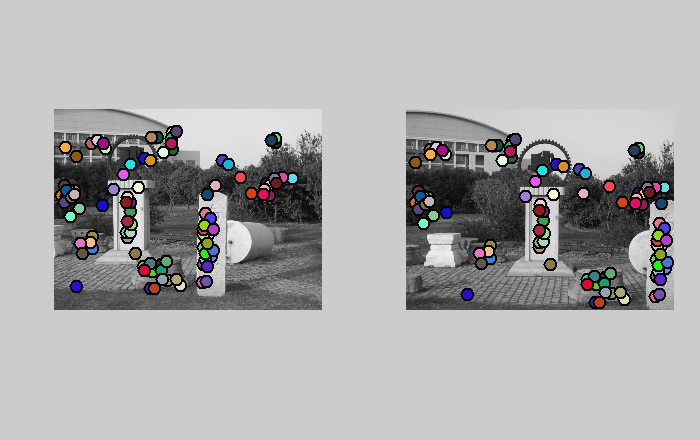

算法基本描述
参考[1]
Algorithm 4.1
(1) Compute the horizontal and vertical derivatives of the image Ix and Iy by convolving
the original image with derivatives of Gaussians (Section 3.2.3).
(2) Compute the three images corresponding to the outer products of these gradients.
(The matrix A is symmetric, so only three entries are needed.)
(3) Convolve each of these images with a larger Gaussian.
(4) Compute a scalar interest measure using one of the formulas discussed above.
(5) Find local maxima above a certain threshold and report them as detected feature
point locations.
就是说，用一个高斯矩阵生成x和y方向的滤波矩阵。用这两个矩阵过滤图像得到Ix&Iy。考虑到对称性，只需要得到三个乘积Ix.*Ix,Iy.*Iy和
Ix.*iy。将这三个乘积矩阵经过较大的高斯函数滤波，得到Ixx=imfilter(Ix.*Ix,gmat);Iyy=imfilter(Iy.*Iy,gmat);Ixy=imfilter(Ix.*Iy,gmat).这三个值构成了Harris角检测算法的相关矩阵A:[Ixx,Ixy;Ixy,Iyy]
然后用一个标量化的值（a scalar interest measure）来确定特征点。这里采用的是:
det(A)-alpha*trace(A)^2
在代码中，计算一个矩阵harris=det(A)-alpha*trace(A)^2,然后设定一个threshold，保留矩阵中大于threshold的值。之后用matlab的colfilt函数用在矩阵harris上，保留窗口宽度为feature_width的窗口中最大的值，也就是非最大值抑制(non-maximum suppression)。最后得到的矩阵值在矩阵harris中的坐标即为图像的特征点坐标。
另外，为了去除图像边界点梯度变化对特征点检测的影响，要将Ix&Iy靠近边界feature_width以内的值置为0。
function[x, y] = get_interest_points(image, feature_width)
%% 以下四个参数和line79的threshold为经验参数，需要调整来确定最佳值 %%
gau_width=15; % 高斯矩阵的维度
gau_small_std=1.2; % 较小高斯矩阵的sigma值
gau_large_std=2.5; % 较大的高斯矩阵的sigma值
alpha=0.06; % harris公式的加权参数
gmat=fspecial('gaussian',[gau_width,gau_width],gau_small_std);
[gmat_x,gmat_y]=imgradientxy(gmat);
Ix=imfilter(image,gmat_x);
Iy=imfilter(image,gmat_y);
%% 图像边界梯度值设为0,去除边界梯度变化对特征点检测的影响 %%
Ix((1:feature_width),:)=0;
Ix((size(Ix,1)-feature_width:size(Ix,1)),:)=0;
Ix(:,(1:feature_width))=0;
Ix(:,(size(Ix,2)-feature_width:size(Ix,2)))=0;
Iy((1:feature_width),:)=0;
Iy((size(Iy,1)-feature_width:size(Iy,1)),:)=0;
Iy(:,(1:feature_width))=0;
Iy(:,(size(Iy,2)-feature_width:size(Iy,2)))=0;
%% 得到harris矩阵 %%
large_gmat=fspecial('gaussian',[gau_width,gau_width],gau_large_std);
Ixx=imfilter(Ix.*Ix,large_gmat); % Ix & Iy 的三个乘积经较大的高斯函数滤波
Iyy=imfilter(Iy.*Iy,large_gmat);
Ixy=imfilter(Ix.*Iy,large_gmat);
harris=Ixx.*Iyy-Ixy.*Ixy-alpha.*(Ixx+Iyy).*(Ixx+Iyy); %%% det(M)-alpha*trace(M)
%% 设定threshold，保留harris矩阵threshold值以上的点 %%
%%% threshold需要调整 %%%%
threshold=harris>0.31*(mean2(harris));
harris=harris.*threshold; %保留threshold以上的harris角点
max_harris=colfilt(harris,[feature_width feature_width],'sliding',@max); % 滑动窗口寻找窗口内的harris最大值
true_mat=harris==max_harris;
harris=harris.*true_mat; % 只保留max_harris
[y,x]=find(harris>0); % 确定特征点的位置，y为harris矩阵的行索引，x为列索引，对应到图像坐标上
end
对特征点进行描述是基于SIFT算法[2]。首先经过滤波，得到图像的x方向和y方向的梯度图像，分别为Ix&Iy。依据下面的公式来计算方向和幅度。
(1) orient=actan(y/x)
(2) magnititude=sqrt(x*x+y*y)
然后判断方向所在的象限。在这里，将整个坐标系划分为8个象限，每个象限占pi/4。
预设值feature_width=16。在图像上，以特征点为中心，得到含有4*4个cell的window（宽度为feature_width），每个cell为4*4的矩阵，将cell内每个点计算方向，确定所在的象限，将对应的幅值累加到8个值的直方图上。每个cell有8个值，共有4*4个cell，故得到4*4*8=128个数据。 另外，window内所有的幅值要经过一个高斯矩阵加权, Lowe在[1]中建议sigma为1.5倍的SIFT描述子窗口（在这里用window表示）大小。最后将该特征点得到的128维数据做normalize处理。每个数据除以这128维数据之和。我做了两次normalize,第一次normalize后，将幅值限定在0.2以下，这是依照对课件的理解：threshold gradient magnitudes to avoid excessive influence of high gradients，after normalization, clamp gradients>0.2，renormalize. 同时按照教材[1]的说法，这样可以对各种光照变化更具robust。
在实验中，曾经尝试用10个象限描述方向，也就是用160维数据描述特征点。在没有改变其他参数的情况下， 发现匹配的正确率下降了大概3个百分点（正确匹配和错误匹配都增加了）。最终提交的代码，仍然使用的是经典的128维数据描述特征点。
在这里使用的是简化版的SIFT,没有考虑不同尺度空间下的特征点检测。在基本完成实验的要求之后，我对描述特征点的主方向做了尝试。仍然在feature_width宽度的窗口内，用直方图估计特征点的主方向。不同于特征点的描述，这里不划分cell，将window内得到的梯度方向统一按高斯加权后的幅值累加到直方图上。整个坐标轴被划分为36个象限，最大值的直方图所表示的象限代表了特征点的主方向(main_orient)，同时简化了对80%（相对于最大值）以上的局部峰值的方向考察。参考[2]，要将图像坐标系旋转main_orient，然后再计算前面的128维数据。对如何将图像坐标轴进行旋转操作，我不太理解。对于一个矩形的window，在两个坐标系下，包含的点是不同的（圆形window下是相同的）。但只是window边缘附近的点不同，我猜想影响不大。于是，就对window内的点得到的梯度方向按照main_orient旋转，来近似坐标系的旋转，然后再统计直方图。但得到的结果很不理想。在与没有加入主方向的实验比较（共同参数的设定基本相同），只有72%的成功匹配，正确的匹配数目只有26个。可能代码中有bug，也可能是我说的这种近似操作有问题。在这里，就不对考虑特征点主方向的实验结果及代码予以展示。
function [features] = get_features(image, x, y, feature_width)
features = zeros(size(x,1), 128);
%%features = zeros(size(x,1), 160);
small_gaussian = fspecial('Gaussian', [feature_width feature_width], 1); % 用于得到图像的两个梯度
large_gaussian = fspecial('Gaussian', [feature_width feature_width], feature_width*3/2); % 用于对特征点周围点的幅值加权
[gmatx, gmaty] = imgradientxy(small_gaussian);
ix = imfilter(image, gmatx); % 图像x方向的梯度值
iy = imfilter(image, gmaty); % 图像y方向的梯度值
%% 求出每个点的幅值 %%
mag=zeros(size(ix,1),size(ix,2));
for i=1:size(ix,1)
for j=1:size(ix,2)
mag(i,j)=sqrt(ix(i,j)*ix(i,j)+iy(i,j)*iy(i,j));
end
end
%% 确定象限 将坐标系分为8个象限，每pi/4一个象限；-pi与-3pi/4之间为第一象限，逆时针依此至第8象限 %%
get_xiangxian = @(x,y) (ceil(atan2(y,x)/(pi/4)) + 4);
%%get_xiangxian = @(x,y) (ceil(atan2(y,x)/(pi/5)) + 5);
xiangxian = arrayfun(get_xiangxian, ix, iy); % 得到图像每个点由ix&iy确定的象限
%% 每个特征点得到包含有4x4个cell的window，以特征点为中心，每个cell为4*4的矩阵 %%
window_size = feature_width;
for ii = 1: length(x)
window_x_range = (x(ii) - 0.5*window_size): (x(ii) + 0.5*window_size-1); % 确定每个特征点的window的范围
window_y_range = (y(ii) - 0.5*window_size): (y(ii) + 0.5*window_size-1);
window_mag = mag(window_y_range, window_x_range);
window_mag = window_mag.*large_gaussian; % 在window内的点的幅值要用一个大的高斯函数加权
window_xiangxian = xiangxian(window_y_range, window_x_range);
%%% 对每个4*4的cell，得到一个象限分布的直方图 %%%
for xx = 1:4
for yy = 1:4
cell_xiangxian = window_xiangxian((xx-1)*4+1:(xx-1)*4+4, (yy-1)*4+1:(yy-1)*4+4);
cell_mag = window_mag((xx-1)*4+1:(xx-1)*4+4, (yy-1)*4+1:(yy-1)*4+4);
%%for orient=1:10
for orient = 1:8
om = (cell_xiangxian == orient);
% 每增加xx,多增加一行，多4*8个值，每增加yy,多增加一个cell，多8个值
features(ii, ((xx-1)*4*8 + (yy-1)*8) + orient) =sum(sum(om.*cell_mag));
%features(ii, ((xx-1)*4*10 + (yy-1)*10) + orient) =sum(sum(om.*cell_mag));
end
end
end
end
%% normalize %%
len1=size(features,1);
len2=size(features,2);
for i=1:len1
for k=1:2 % 做两次normalize
sum_features=0;
for j=1:len2
sum_features=sum_features+features(i,j); % 将每个特征点的特征描述值求和
end
for j=1:len2
features(i,j)=features(i,j)/sum_features; % 将每个特征点的特征描述值normalize
% 第一次normalize，将normalize后的幅值限定在0.2以下，依照对课件的理解：
% threshold gradient magnitudes to avoid excessive influence of high gradients
if(k==1)
if(features(i,j)>0.2)
features(i,j)=0.2;
end
end
end
end
end
特征点的匹配是基于描述特征点的128维数据的欧式距离，参照教材[1]的4.1.4节equation 4.18。对于一幅图像的某一个特征点A，分别计算其与另一幅图像的所有特征点的欧式距离，并进行排序，如果最近点的欧氏距离与次近点的欧式距离小于阀值threshold，则认为A与这个最近点匹配。将所有满足条件的匹配找出，并用次近点与最近点的欧氏距离之比来表征confidence。
function [matches, confidences] = match_features(features1, features2)
threshold=0.67; % 经验值，需要实验调整 threshold限定了最近点与次近点的距离之比，小于该值才认为为匹配点
%threshold=0.71;
%% 计算对应于两幅图像的两个特征点集合的欧式距离，每一行对应于features1中某一个特征点与features2中所有特征点的距离 %%
len1=size(features1,1);
len2=size(features2,1);
euc_dist=zeros(size(features1,1),size(features2,1)); % euc_dist为两个特征点集合的（特征点描述量的）欧式距离矩阵
dim=size(features1,2);
for i=1:len1
for j=1:len2
sum_value=0;
for k=1:dim
sum_value=sum_value+power(features1(i,k)-features2(j,k),2);
end
euc_dist(i,j)=sqrt(sum_value);
end
end
%% 将距离矩阵每行按照升序排列 %%
[sort_dist,index]=sort(euc_dist,2); %%升序排列，index记录排序后的sort_dist矩阵每个点在features中的索引
%% confidece_temp记录次近点与最近点的距离之比，将符合threshold限制的值给confidences矩阵
confidences_temp=sort_dist(:,2)./sort_dist(:,1);
% confidence_temp为次近点与最近点之比，越大越好，所以保留大于1/threshold的值
confidences=confidences_temp(confidences_temp>1/threshold);
matches=zeros(size(confidences,1),2);
%% matches矩阵来存放匹配的特征点索引，且confidence最大的，放在第一行 %%
k=1;
for i=1:len1
if(sort_dist(i,1)/sort_dist(i,2)
matches(k,1)=i;
matches(k,2)=index(i,1);
k=k+1;
end
end
% Sort the matches so that the most confident onces are at the top of the
% list. You should probably not delete this, so that the evaluation
% functions can be run on the top matches easily.
[confidences,features1_index]=sort(confidences,'descend'); % 将confidences按降序排列
matches=matches(features1_index,:);
end
一、不同参数下给定图像的实验结果
实验参数有多个，如get_interesting_points.m中两个高斯滤波核的维度和sigma以及确定特征点的threshold，还有确定匹配的threshold等。只是很有限地对调整了这些参数，所以不一定得到的是最佳的实验结果。
实验中用于特征点匹配的threshold比较难确定，是个需要权衡的值。设置过大，正确匹配和错误匹配的数量都会增加。
1.先设定(特征点匹配)threshold=0.71.
|
72 total good matches, 7 total bad matches. 正确的匹配占91%多一点。 |
2.设定(特征点匹配)threshold=0.67.（这是提交的代码运行的结果）
|
62 total good matches, 5 total bad matches. 正确的匹配占近93%。相比于threshold=0.71,正确和错误的匹配数目都减少了，但正确率增加了。 |
二、对其他图像处理的结果
需要调整参数（主要还是调节前面提到的几个参数），来适应不同实验图像的尺度。 由于没有写评估函数来对匹配的结果统计，这里仅仅显示出实验输出的结果。依靠视觉上的大致评估，实验仍能得到较高的匹配成功率。|  |
本项目用harris算法检测特征点，用简化版的SIFT描述特征点，用欧式距离之比来对特征点匹配。这里做了许多简化处理，但仍能得到较高的匹配成功率。最佳实验结果需要尝试多尺度空间下的特征点检测、较完整的SIFT算法对特征点描述以及RANSAC等方法对特征点匹配。
参考文献
[1] Richard Szeliski, Computer Vision: Algorithm and Application.
[2] David G. Lowe, Distinctive Image Features from Scale-Invariant Keypoints.
[3] Chris Harris, et. al., A COMBINED CORNER AND EDGE DETECTOR.
[4] Richard Szeliski, 计算机视觉：算法与应用([1]中文版).